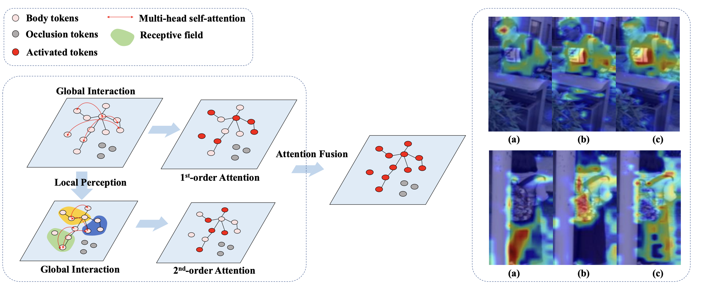

|
Chunlin Yu I'm a second-year master's student at ShanghaiTech University, where I am currently advised by Jingya Wang. Before pursuing the master's degree, I obtained my bachelor's degree from ShanghaiTech University. I've received the Outstanding Student Award in 2023. Email / CV / Google Scholar / Github |
ResearchMy research interests include self-supervised learning and human-centered vision, including but not limited to LLM/LVM, deep clustering, biometric recognition, 2D/3D human-object interaction, and affordances. |
|
|
HybridGait: A Benchmark for Spatial-Temporal Cloth-Changing Gait Recognition with Hybrid Explorations
Yilan Dong, Chunlin Yu, Ruiyang Ha, Ye Shi, Yuexin Ma, Yanwei Fu, Jingya Wang AAAI, 2024 Paper / Code A challenging benchmark CCGait that captures realistic appearance changes over expanded time and space, as well as a hybrid framework HybridGait. |

|
Contextually Affinitive Neighborhood Refinery for Deep Clustering
Chunlin Yu, Ye Shi, Jingya Wang NeurIPS, 2023 Paper / Code We propose ConAff Neighborhoods for more context-rich neighbor retrievals as well as a progressive Boundary Filtering strategy for noise-resilient neighborhoods. |
|
|
Lifelong Person Re-Identification via Knowledge Refreshing and Consolidation
Chunlin Yu, Ye Shi, Zimo Liu, Shenghua Gao, Jingya Wang AAAI, 2023 Project Page / Paper Using a biological-inspired network involving a dynamical memory model and an adaptive working model to refresh and consolidate the knowledge on the fly. |
|

|
Oh-Former: Omni-Relational High-Order Transformer for Person Re-Identification
Xianing Chen*, Chunlin Yu*, Qiong Cao, Jialang Xu, Yujie Zhong, Jiale Xu, Zhengxin Li, Jingya Wang, Shenghua Gao arXiv, 2021 A high-order transformer that captures omni-relational information for person re-identification. |
Services |
| Conference Reviewers: CVPR, ECCV, ICCV, ICCV, ICLR |